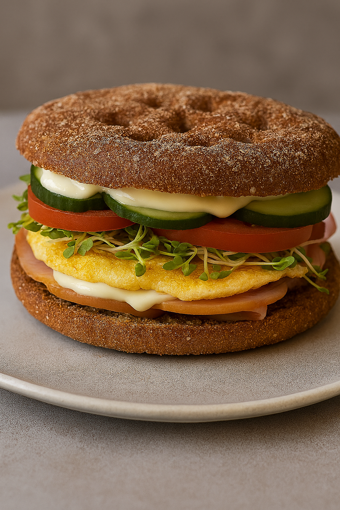

Rye Bread Sandwich

Description
My simple go-to rye bread sandwich.
Ingredients
- 1 rye bread round, sliced in half
- Fried egg
- 2 slices of deli meat
- Broccoli sprouts
- Tomato
- Cucumber
- Mayo
Steps
- Mix and fry 1 egg on a pan coated with margarine. Add a light pinch of salt.
- Toast the rye bread.
- Slice tomato and cucumber into rounds.
- Spread mayo on the toasted bread.
- Layer the egg, deli meat, and vegetables between the bread slices.
- Enjoy your rye bread sandwich!